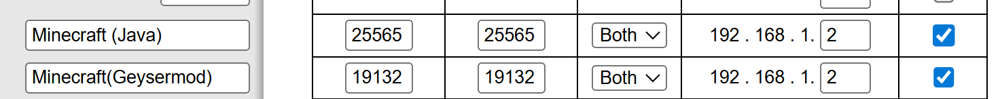
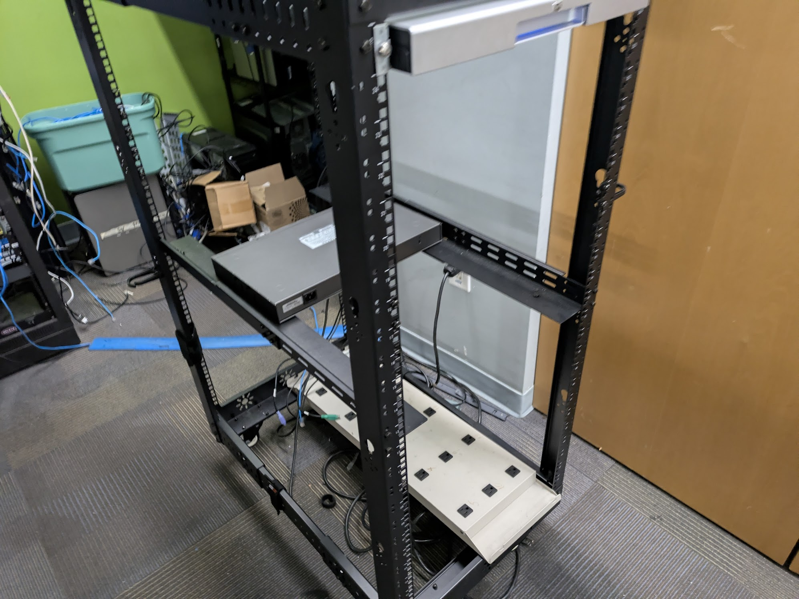

This marked the beginning of the madness, after successfully booting the pc into BIOS then burning a flash drive
with Ubuntu server with Rufus and installing the OS. (I ended up being confused with CIDR slash notation for the
subnet mask during installation. [/X is the number of bits within the mask])
This marked the beginning of the madness, after successfully booting the pc into BIOS then burning a flash drive
with Ubuntu server with Rufus and installing the OS. (I ended up being confused with CIDR slash notation for the
subnet mask during installation. [/X is the number of bits within the mask])| External Port | Internal Port | Protocol | To IPv4 Address | Enabled |
| 25565 | 25565 | Both | This goes to your IP address of the computer the server is running on | True |
I would recommend using a different external port as bots scan the internet for mincraft servers and attempt to commit various malicious actions.

I was not able to get a picture of the server when it was still in the rack, because our program was being cut and merged so our instructor had taken back his personal equipment. So imagine two HP DL360 G6 here however, we had only used one.
